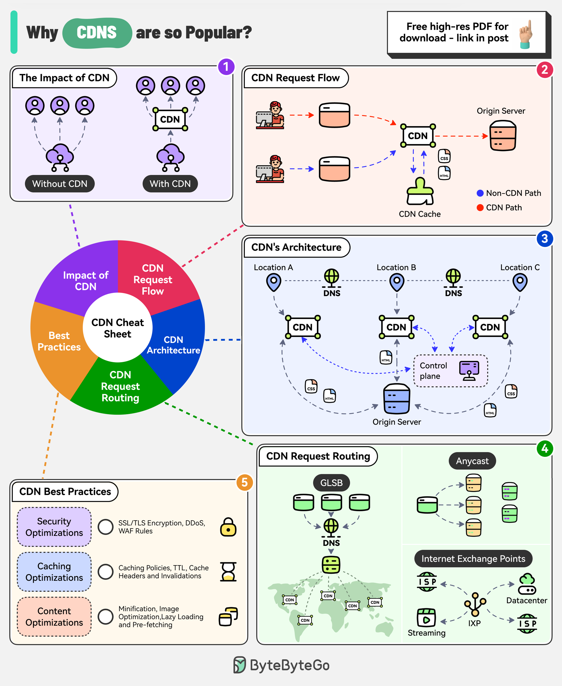

The CDN market is expected to reach nearly $38 billion by 2028. Companies like Akamai, Cloudflare, and Amazon CloudFront are investing heavily in this area.
CDNs improve performance, increase availability, and enhance bandwidth costs. With the use of CDN, there is a significant reduction in latency.
After DNS resolution, the user’s device sends the content request to the CDN edge server.
The edge server checks its local cache for the content. If found, the edge server serves the content to the user.
If not found, the edge server forwards the request to the origin server.
After receiving the content from the origin server, the edge server stores a copy in its cache and delivers it to the user.
There are multiple components in a CDN’s architecture:
Origin Server: This is the primary source of content.
Edge Servers: They cache and server content to the users and are distributed across the world.
DNS: The DNS resolves the domain name to the IP address of the nearest edge server
Control Plane: Responsible for configuring and managing the edge servers.
GSLB: Routes user requests to the server based on factors like geographic proximity, server load, network conditions
Anycast DNS: Allows multiple servers to share the same IP address. It helps route incoming traffic to the nearest data center.
Internet Exchange Points: CDN providers establish a presence at major IXPs, allowing them to exchange traffic directly with ISPs and other networks.
Some key best practices to optimize CDN performance are related to security aspects, caching optimizations, and content optimizations.